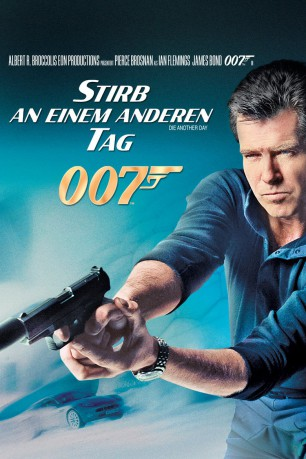
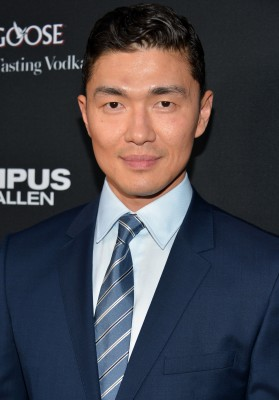
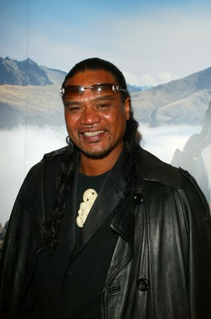
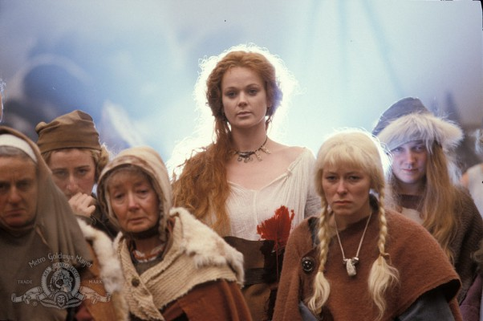

#275 James Bond 21 - Pierce Brosnan - Stirb an einem anderen Tag
Alternativ: Die Another Day
 
 IMDB-Wertung: 6.1 / 10
IMDB-Wertung: 6.1 / 10  Metascore: 56
Metascore: 56 
Auf der Jagd nach dem größenwahnsinnigen Schurken Gustav Graves und seinem gnadenlosen Erfüllungsgehilfen Zao reist Bond in die Höhle des Löwen bis nach Island. In einem fantastischen, vollkommen aus Eis erbauten Palast muss er am eigenen Leib die durchschlagende Wirkung einer neuen Superwaffe kennen lernen. Das Geschehen spitzt sich zu, bis es schließlich, wieder am Ausgangsort Korea angelangt, zu einem explosiven Showdown – und einem unvergesslichen Schlussakt – kommt.
Jahr: 2002
Dauer: 133 Minuten
FSK: 12
Land: England Studio: 20th Century Fox of GermanyTonspuren: DTS - , DTS - ,
Untertitel: Deutsch, Englisch,
Auflösung: 1080p (1920×804) Größe: 16896 MB
Genre: Action, Abenteuer, Thriller
Regisseur:  Lee Tamahori
Lee Tamahori
Drehbuch: Ian Fleming, Neal Purvis, Robert Wade
Soundtrack: David Arnold
Darsteller:
 Pierce Brosnan als James Bond
Pierce Brosnan als James Bond Halle Berry als Jinx Johnson
Halle Berry als Jinx Johnson Toby Stephens als Gustav Graves
Toby Stephens als Gustav Graves Rosamund Pike als Miranda Frost
Rosamund Pike als Miranda Frost-  Rick Yune als Zao
 Judi Dench als M
Judi Dench als M John Cleese als Q
John Cleese als Q Michael Madsen als Damian Falco
Michael Madsen als Damian Falco Will Yun Lee als Colonel Moon
Will Yun Lee als Colonel Moon Kenneth Tsang als General Moon
Kenneth Tsang als General Moon Emilio Echevarría als Raoul
Emilio Echevarría als Raoul- Mikhail Gorevoy als Vlad
-  Lawrence Makoare als Mr. Kil
 Colin Salmon als Charles Robinson
Colin Salmon als Charles Robinson-  Samantha Bond als Miss Moneypenny
- Ho Yi als Hotel Manager
- Rachel Grant als Peaceful
 Ian Pirie als Creep
Ian Pirie als Creep Simón Andreu als Dr. Alvarez
Simón Andreu als Dr. Alvarez- Mark Dymond als Van Bierk
- Deborah Moore als Air Hostess
 Joaquín Martínez als Old Man Cigar Factory
Joaquín Martínez als Old Man Cigar Factory Michael G. Wilson als General Chandler
Michael G. Wilson als General Chandler- Manolo Caro als Cuban Waiter
- Lucas Hare als Medic
 Stewart Scudamore als Buckingham Palace Reporter
Stewart Scudamore als Buckingham Palace Reporter- Thomas Ho als Korean Guard , uncredited
 Derek Lea als Gustav Palace Guard , uncredited
Derek Lea als Gustav Palace Guard , uncredited Madonna als Verity , uncredited
Madonna als Verity , uncredited- Catherine Porter als Ice Palace Party Guest , uncredited
- Christopher Schönning als Army Guy , uncredited
 Tina Simmons als Ice Palace Guest , uncredited
Tina Simmons als Ice Palace Guest , uncredited- Sherry Stone als Cuban Cigar Roller , uncredited
 Trevor White als Jumpmaster , uncredited
Trevor White als Jumpmaster , uncredited- Ben Wee als Snooty Desk Clerk
- Oliver Skeete als Concierge
- Daryl Kwan als General Han
- Vincent Wong als General Li
- Sai-Kit Yung als General Dong
- Sarllya als Korean Scorpion Guard
- Paul Darrow als Doctor
- Cristina Contes als Nurse
- Bill Nash als Buckingham Palace Reporter
- James Wallace als Buckingham Palace Reporter
- Ami Chorlton als Buckingham Palace Reporter
- Alan Bond als Reporter , uncredited
- Douglas Bunn als US Marine , uncredited
- Stephanie Burns als Cameo Role , uncredited
- David Decio als Mr. Kil's Personal Ice Palace Assistant / Jinx's Personal Driver , uncredited
- Anna Edwards als Ice Palace Guest , uncredited
Datei: X:\7+mehr(A-Z)\007 James Bond\James Bond 21 - Pierce Brosnan - Stirb an einem anderen Tag (2002, FSK12, 1920x804).mkv seit 15.02.2015
Festplatte: HD Collection-7+mehr(A-Z)+Person
 Es gibt insgesamt 28 Filme in der Gruppe '7+mehr(A-Z)\007 James Bond'
Es gibt insgesamt 28 Filme in der Gruppe '7+mehr(A-Z)\007 James Bond'